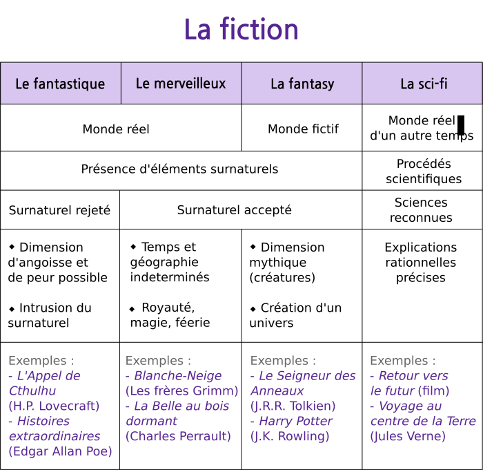
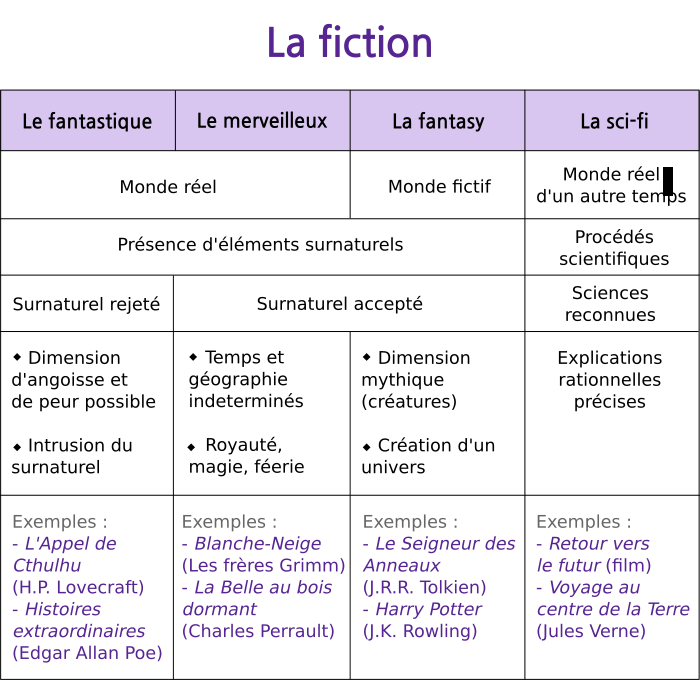

Comment savoir à quel registre appartient mon roman ? Annexe
Publié le 05/01/2015 dans Rédaction.
Comme promis, voici le tableau récapitulatif des sous-registres de la fiction.
Comme promis, voici le tableau récapitulatif des sous-registres de la fiction.
